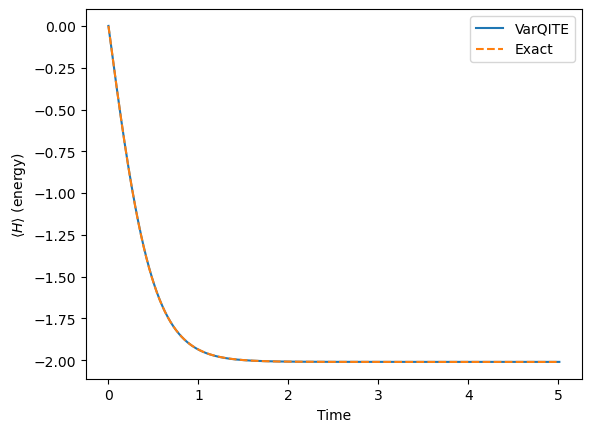
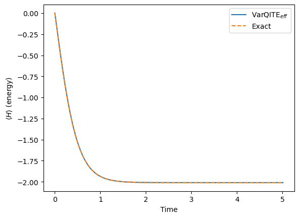
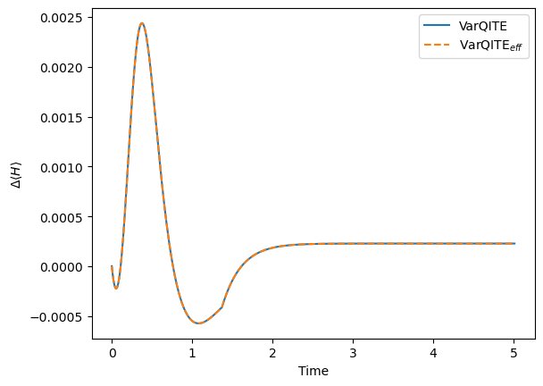
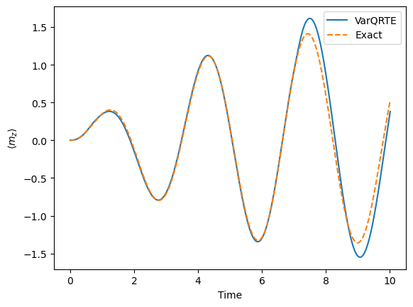
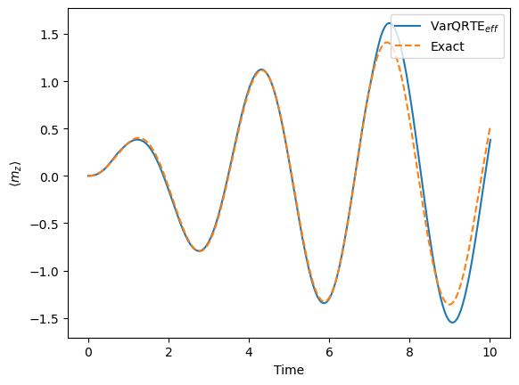
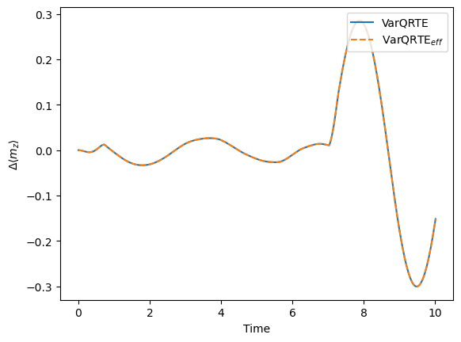

Variational Quantum Time Evolution#
from qiskit.quantum_info import SparsePauliOp
hamiltonian = SparsePauliOp(['ZZ', 'IX', 'XI'],
coeffs=[-0.2 , -1, -1])
magnetization = SparsePauliOp([ 'IZ', 'ZI'], coeffs=[1, 1])
---------------------------------------------------------------------------
ModuleNotFoundError Traceback (most recent call last)
Cell In[1], line 1
----> 1 from qiskit.quantum_info import SparsePauliOp
3 hamiltonian = SparsePauliOp(['ZZ', 'IX', 'XI'],
4 coeffs=[-0.2 , -1, -1])
6 magnetization = SparsePauliOp([ 'IZ', 'ZI'], coeffs=[1, 1])
ModuleNotFoundError: No module named 'qiskit'
from qiskit.circuit.library import EfficientSU2
ansatz = EfficientSU2(hamiltonian.num_qubits, reps=1)
ansatz.decompose().draw()
┌──────────┐┌──────────┐ ┌──────────┐┌──────────┐
q_0: ┤ Ry(θ[0]) ├┤ Rz(θ[2]) ├──■──┤ Ry(θ[4]) ├┤ Rz(θ[6]) ├
├──────────┤├──────────┤┌─┴─┐├──────────┤├──────────┤
q_1: ┤ Ry(θ[1]) ├┤ Rz(θ[3]) ├┤ X ├┤ Ry(θ[5]) ├┤ Rz(θ[7]) ├
└──────────┘└──────────┘└───┘└──────────┘└──────────┘import numpy as np
init_param_values={}
for i in range(len(ansatz.parameters)):
init_param_values[ansatz.parameters[i]]=np.pi/2
from qiskit_algorithms.time_evolvers.variational import ImaginaryMcLachlanPrinciple
var_principle = ImaginaryMcLachlanPrinciple()
from qiskit_algorithms import TimeEvolutionProblem
time = 5.0
aux_ops = [hamiltonian]
evolution_problem = TimeEvolutionProblem(hamiltonian, time, aux_operators=aux_ops)
from qiskit_algorithms import VarQITE
from qiskit.primitives import Estimator
var_qite = VarQITE(ansatz, init_param_values, var_principle, Estimator())
# an Estimator instance is necessary, if we want to calculate the expectation value of auxiliary operators.
evolution_result = var_qite.evolve(evolution_problem)
from qiskit.quantum_info import Statevector
init_state = Statevector(ansatz.assign_parameters(init_param_values))
from qiskit_algorithms import SciPyImaginaryEvolver
evolution_problem = TimeEvolutionProblem(hamiltonian, time, initial_state=init_state, aux_operators=aux_ops)
exact_evol = SciPyImaginaryEvolver(num_timesteps=501)
sol = exact_evol.evolve(evolution_problem)
import pylab
h_exp_val = np.array([ele[0][0] for ele in evolution_result.observables])
exact_h_exp_val = sol.observables[0][0].real
times = evolution_result.times
pylab.plot(times, h_exp_val, label= "VarQITE")
pylab.plot(times, exact_h_exp_val , label= "Exact", linestyle='--')
pylab.xlabel("Time")
pylab.ylabel(r"$\langle H \rangle$ (energy)")
pylab.legend(loc="upper right");

print("Ground state energy", h_exp_val[-1])
Ground state energy -2.0097479079521197
from qiskit_algorithms.gradients import ReverseEstimatorGradient, ReverseQGT
var_principle = ImaginaryMcLachlanPrinciple(qgt=ReverseQGT() , gradient=ReverseEstimatorGradient())
evolution_problem = TimeEvolutionProblem(hamiltonian, time, aux_operators=aux_ops)
var_qite = VarQITE(ansatz, init_param_values, var_principle, Estimator())
evolution_result_eff = var_qite.evolve(evolution_problem)
h_exp_val_eff = np.array([ele[0][0] for ele in evolution_result_eff.observables])
exact_h_exp_val_eff = sol.observables[0][0].real
times = evolution_result_eff.times
pylab.plot(times, h_exp_val_eff, label= r"VarQITE$_{eff}$")
pylab.plot(times, exact_h_exp_val_eff , label= "Exact", linestyle='--')
pylab.xlabel("Time")
pylab.ylabel(r"$\langle H \rangle$ (energy)")
pylab.legend(loc="upper right");

print("Ground state energy", h_exp_val_eff[-1])
Ground state energy -2.0097479079521197
pylab.plot(times, (h_exp_val-exact_h_exp_val), label="VarQITE")
pylab.plot(times, (h_exp_val_eff-exact_h_exp_val_eff), label=r"VarQITE$_{eff}$", linestyle='--')
pylab.xlabel("Time")
pylab.ylabel(r"$\Delta \langle H \rangle$")
pylab.legend(loc="upper right");

ansatz = EfficientSU2(hamiltonian.num_qubits, reps=1)
ansatz.decompose().draw()
┌──────────┐┌──────────┐ ┌──────────┐┌──────────┐
q_0: ┤ Ry(θ[0]) ├┤ Rz(θ[2]) ├──■──┤ Ry(θ[4]) ├┤ Rz(θ[6]) ├
├──────────┤├──────────┤┌─┴─┐├──────────┤├──────────┤
q_1: ┤ Ry(θ[1]) ├┤ Rz(θ[3]) ├┤ X ├┤ Ry(θ[5]) ├┤ Rz(θ[7]) ├
└──────────┘└──────────┘└───┘└──────────┘└──────────┘init_param_values = {}
for i in range(len(ansatz.parameters)):
init_param_values[ansatz.parameters[i]] = np.pi/2 # initialize the parameters which also decide the initial state
init_state = Statevector(ansatz.assign_parameters(init_param_values))
print(init_state)
Statevector([-5.00000000e-01+0.00000000e+00j,
-5.00000000e-01-5.55111512e-17j,
0.00000000e+00-5.00000000e-01j,
1.66533454e-16+5.00000000e-01j],
dims=(2, 2))
Statevector([-5.00000000e-01+5.07326818e-18j,
-5.00000000e-01-6.66967228e-17j,
3.89411472e-17-5.00000000e-01j,
1.55347882e-16+5.00000000e-01j],
dims=(2, 2))
Statevector([-5.00000000e-01+0.00000000e+00j,
-5.00000000e-01-5.55111512e-17j,
0.00000000e+00-5.00000000e-01j,
1.66533454e-16+5.00000000e-01j],
dims=(2, 2))
from qiskit_algorithms.time_evolvers.variational import RealMcLachlanPrinciple
var_principle = RealMcLachlanPrinciple()
aux_ops = [magnetization]
from qiskit_algorithms import VarQRTE
time = 10.0
evolution_problem = TimeEvolutionProblem(hamiltonian, time, aux_operators=aux_ops)
var_qrte = VarQRTE(ansatz, init_param_values,var_principle, Estimator())
evolution_result_re = var_qrte.evolve(evolution_problem)
init_circ = ansatz.assign_parameters(init_param_values)
from qiskit_algorithms import SciPyRealEvolver
evolution_problem = TimeEvolutionProblem(hamiltonian, time, initial_state = init_circ, aux_operators=aux_ops)
rtev = SciPyRealEvolver(1001)
sol = rtev.evolve(evolution_problem)
mz_exp_val_re = np.array([ele[0][0] for ele in evolution_result_re.observables])
exact_mz_exp_val_re = sol.observables[0][0].real
times = evolution_result_re.times
pylab.plot(times, mz_exp_val_re, label= "VarQRTE")
pylab.plot(times, exact_mz_exp_val_re , label= "Exact", linestyle='--')
pylab.xlabel("Time")
pylab.ylabel(r"$\langle m_z \rangle$")
pylab.legend(loc="upper right");

from qiskit_algorithms.gradients import DerivativeType
var_principle = RealMcLachlanPrinciple(qgt=ReverseQGT() , gradient=ReverseEstimatorGradient(derivative_type=DerivativeType.IMAG))
time = 10.0
evolution_problem = TimeEvolutionProblem(hamiltonian, time, aux_operators=aux_ops)
var_qrte = VarQRTE(ansatz, init_param_values,var_principle, Estimator())
evolution_result_re_eff = var_qrte.evolve(evolution_problem)
mz_exp_val_re_eff = np.array([ele[0][0] for ele in evolution_result_re_eff.observables])
pylab.plot(times, mz_exp_val_re_eff, label= r"VarQRTE$_{eff}$")
pylab.plot(times, exact_mz_exp_val_re , label= "Exact", linestyle='--')
pylab.xlabel("Time")
pylab.ylabel(r"$\langle m_z \rangle$")
pylab.legend(loc="upper right");

pylab.plot(times, (mz_exp_val_re-exact_mz_exp_val_re), label= "VarQRTE")
pylab.plot(times, (mz_exp_val_re_eff-exact_mz_exp_val_re), label= r"VarQRTE$_{eff}$", linestyle='--')
pylab.xlabel("Time")
pylab.ylabel(r"$\Delta \langle m_z \rangle$")
pylab.legend(loc="upper right");
